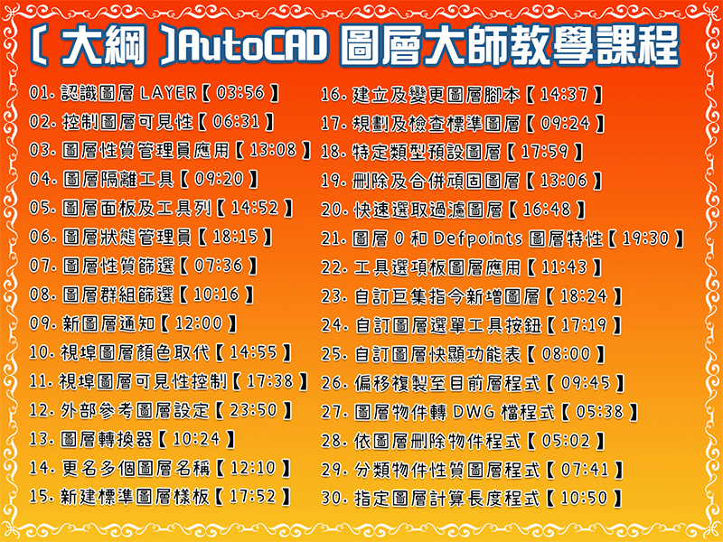

★注意：線上課程影片頻道綁定「GMAIL信箱」，透過電腦線上觀看影片時，必需要「登入GOOGLE帳戶」！
★加入線上課程 👉 https://autocad-tw.1shop.tw/cdeuyr 👈
▼函授教學主題：AutoCAD圖層大師_線上課程/光碟課程
介紹：全新 AutoCAD 2023 圖層教學，此課程包含「基礎+實務」，教學課程DWG範例引導，學習操作步驟循序漸進，新手可完整認識瞭解出圖功能，及出圖比例問題，老手可以補足出圖相關知識，並且應用多元的實務出圖需求，滿足目前工作任務。
作者：Tiger&蘋果爸
版本：AutoCAD 2023
影片：中文影音教學
規格：共計30道範例(課程約380分鐘)
註1：附有DWG範例供操作練習，還有相關教學文件筆記。
註2：如遇播放問題，可改用「彈出式視窗」全螢幕觀看影片。

▼AutoCAD圖層大師 | 光碟課程 線上課程 | 課前說明精采預告▼
教授軟體為AutoCAD 2023版本，使用AutoCAD 2010至AutoCAD 2023版本均可適用！
因為課程教授的基礎觀念及步驟作法都是通用的，這一點請大家放心，有學習疑慮隨時上「顧問論壇」或「FB社團」提問。
課程內含「DWG範例」、「筆記重點整理」及「論壇網頁主題說明」。
🔒 課程範例為付費學員專屬：需付費加入課程後才可下載（課程資源下載不扣金幣）。

■ 21.圖層0和Defpoints圖層特性【19:30】
https://www.autocad-tw.com/f72-forum
https://www.autocad-tw.com/t23024-topic
https://www.autocad-tw.com/t22774-topic